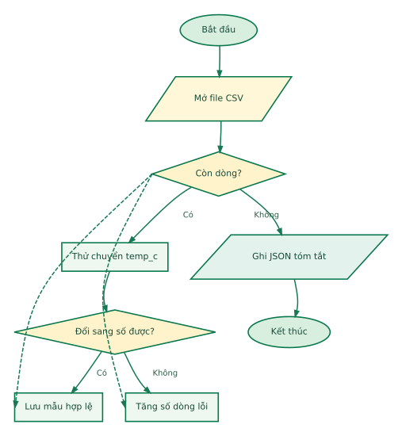

Khóa học / Mô-đun 2 / Bài 09
01 Mục tiêu và kiến thức tiên quyết
- Đọc CSV bằng with open và csv.DictReader, viết JSON với mã hóa UTF-8.
- Phân biệt lỗi không tìm thấy tệp với lỗi chuyển đổi dữ liệu.
- Xác định chính sách bỏ qua dòng lỗi và báo số lượng bản ghi bị loại.
Kiến thức tiên quyết: bài trước, kiến thức lập trình tương ứng.
02 Tình huống kỹ thuật
Nhật ký nhiệt độ được lưu dưới dạng CSV. Tệp có thể có dòng thiếu dữ liệu hoặc số đo nhập sai. Chương trình phải đọc từng dòng, đếm bản ghi hợp lệ và ghi lại lỗi một cách minh bạch.
Tệp data/nhiet_do_mau.csv (UTF-8) gồm timestamp, temp_c, current_a; có một dòng temp_c không phải số.
Đếm dòng hợp lệ/lỗi và ghi output/tom_tat_bai09.json.
03 Kiến thức và thuật ngữ cốt lõi
Quản lý tệp tin
with open(...) đảm bảo đóng tệp ngay cả khi có ngoại lệ. Encoding UTF-8 giúp lưu văn bản tiếng Việt; newline="" được khuyến nghị khi làm việc với csv.writer/DictReader.
CSV và JSON
CSV chứa các cột dữ liệu phẳng có quy tắc trích dẫn; JSON phù hợp đối tượng có khóa, danh sách và kiểu cơ bản. Không suy từ CSV rằng mọi giá trị đã là float.
Ngoại lệ
FileNotFoundError, ValueError và KeyError có nguyên nhân khác nhau. Xử lý lỗi tại mức có thể khôi phục, không nuốt hết ngoại lệ bằng except trống.
Truy xuất có kiểm chứng
Khi bỏ dòng không hợp lệ, phải ghi nhận số dòng và tiêu chí bỏ; thống kê chỉ thực hiện trên mẫu hợp lệ. Không tự sửa dữ liệu lỗi nếu không có quy tắc được phép.
04 Xây dựng và kiểm tra thuật toán
Trước khi xem chương trình, hãy đọc dữ liệu đầu vào, chọn điều kiện rẽ nhánh hoặc lặp, rồi dự đoán kết quả. Mã giả mô tả ý nghĩa thuật toán; không phải cú pháp Python thực thi được.

Mã giả
Lần vết các bước phân tích
Đây là lần vết các dòng mã giả, không phải trình thông dịch Python. Tự kiểm tra nhánh điều kiện bằng bảng ca kiểm thử ở mục 07.
05 Chương trình Python đã kiểm tra
Đọc mã, dự đoán kết quả và chạy tệp bai_09.py trong thư mục code. Các mã bài 9 trở lên có thể cần dữ liệu đi kèm từ thư mục data.
import csv
import json
from pathlib import Path
root = Path(__file__).resolve().parent.parent
nguon = root / "data" / "nhiet_do_mau.csv"
dich = root / "output" / "tom_tat_bai09.json"
dich.parent.mkdir(parents=True, exist_ok=True)
hop_le, loi = [], 0
with nguon.open("r", encoding="utf-8", newline="") as f:
for dong in csv.DictReader(f):
try:
t = float(dong["temp_c"])
except (ValueError, KeyError, TypeError):
loi += 1
continue
hop_le.append(t)
tom_tat = {"so_hop_le": len(hop_le), "so_loi": loi}
with dich.open("w", encoding="utf-8") as f:
json.dump(tom_tat, f, ensure_ascii=False, indent=2)
print(tom_tat)
06 Thử nghiệm tham số có hướng dẫn
Thay đổi đầu vào để kiểm tra trực giác và đối chiếu với kết quả dự đoán. Trình khám phá này được lập trình lại bằng JavaScript theo bài toán minh họa, không phải kết quả chạy mã Python.
07 Thực hành và kiểm thử
Thực hiện các nhiệm vụ theo thứ tự từ có hướng dẫn đến độc lập; ghi lại kết quả thực tế của chương trình và so sánh với kết quả kỳ vọng.
- Thêm một dòng temp_c="" để quan sát cách chính sách loại dòng hoạt động.
- Thử đổi tên tệp và giải thích ngoại lệ xuất hiện.
- So sánh cấu trúc file CSV với JSON được xuất ra.
Bảng kiểm thử bắt buộc
| Ca kiểm thử | Dữ liệu/điều kiện | Kết quả kỳ vọng |
|---|---|---|
| Đầu vào mẫu | 8 dòng trong CSV, 1 dòng temp_c sai | 7 hợp lệ, 1 lỗi |
| Thiếu tệp | Sai đường dẫn | FileNotFoundError rõ ràng |
| Dòng không có temp_c | Không có trường | Ghi nhận là lỗi |
| Xuất JSON | Có khóa so_hop_le,so_loi | Tệp UTF-8 đọc được |
08 Vận dụng vào chuyên ngành
Đọc nhật ký nhiệt độ phòng lạnh giả lập, chỉ thống kê bản ghi có số đo hợp lệ.
Đọc nhật ký điện áp ắc quy giả lập, ghi nhận các bản ghi sai định dạng.
09 Trắc nghiệm và phản hồi
Mỗi câu có bốn phương án A/B/C/D. Chọn một phương án cho mỗi câu rồi nhấn Chấm và giải thích để xem vì sao từng phương án đúng hoặc chưa phù hợp.
Rubric tham khảo (100 điểm)
| Thành phần | Điểm |
|---|---|
| Đặc tả dữ liệu, đơn vị, giả thiết | 20 |
| Mã giả, trình tự thuật toán | 20 |
| Mã Python và tổ chức hàm/dữ liệu | 25 |
| Kiểm thử, đối chiếu, phân tích sai số | 25 |
| Giải thích và đề xuất cải tiến | 10 |
10 Nhật ký học tập và đánh dấu tiến độ
Tiến độ và ghi chép chỉ lưu trong trình duyệt hiện tại; không đồng bộ với hệ thống điểm của trường.
11 Tài liệu tham khảo và nguồn
| Nguồn | Vai trò và phạm vi sử dụng |
|---|---|
| Pythonlearn-07-Files.pptx | C. Severance, Python for Everybody — Chương 7, tệp dữ liệu. |
| BAI THUC HANH PYTHON CO BAN 2022.pdf | Khoa CNTT, bài thực hành Python cơ bản — nhập/xuất, điều khiển, dữ liệu, hàm và tổng hợp. |
| Python 3 Documentation | Tài liệu chuẩn của ngôn ngữ Python 3. |
Học liệu mới được viết lại theo định hướng sư phạm. Không trích lại nguyên văn hoặc phân phối các slide/sách gốc trong gói website.